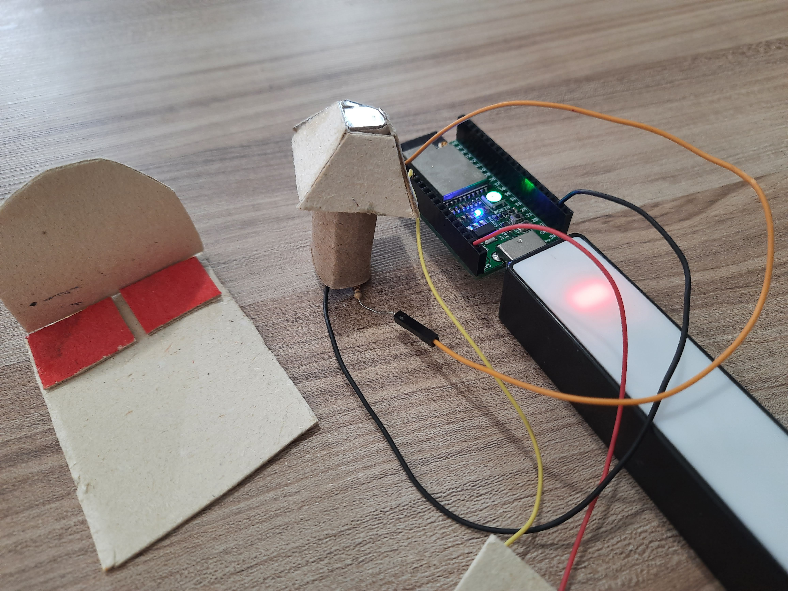

Botão liga e desliga

Proposta da atividade
Nesta atividade temos o seguinte exemplo, como fazer para um botão ao ser pressionado acenda um LED e ao pressionar novamente o botão, ele irá desligar o LED.
Materiais
- 1 Placa Franzininho Wifi;
- 1 Protoboard;
- 1 LED 3mm;
- 1 Resistor 300 Ohm;
- 1 Botão;
- Jumpers
Circuito

Código
"""Exemplo 3 - Botão Liga e desliga"""
import time
import board
from digitalio import DigitalInOut, Direction, Pull
# Configurei o botão no pino 5 da Franzininho Wifi
btn = DigitalInOut(board.IO6)
btn.direction = Direction.INPUT
btn.pull = Pull.UP
# o led que configurei foi o pino 4 = IO4
led = DigitalInOut(board.IO4)
led.direction = Direction.OUTPUT
while True:
if btn.value ==0:
#print("BTN is down")
led.value=not led.value
while btn.value==0:
time.sleep(0.01)
Vídeo
Desafio
O desafio agora é trabalhar com dois botões para acender dois leds.
Dica
Utilize a #franzininho para que nós possamos publicar em nossas redes sociais o seu desafio